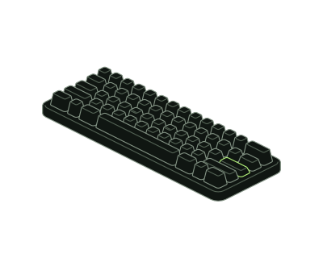

PROJETO PRINCIPAL HARDWARE SECURITY
HIDra
Do firmware ao protocolo.
Uma pesquisa em USB HID.
Projeto de laboratório para Raspberry Pi Pico W que explora USB HID e controle remoto por Wi-Fi. A arquitetura documentada combina firmware em C/C++, comunicação TLS 1.3 e integridade de mensagens com HMAC-SHA256.
Explorar repositório
- 01Servidor C2Python · protocolo JSONCONTROL
- Wi-Fi / TLS 1.3 + HMAC-SHA256
- 02Raspberry Pi Pico WCore 0: rede · Core 1: USB HIDDEVICE
- USB HID / TinyUSB
- 03Host de laboratórioInterface de teclado USBHOST
Pesquisa em ambiente controlado. Estrutura inclui firmware, simulador e suíte de testes; o servidor Python está pendente no snapshot analisado.
Decisões de engenharia e limites do projeto
Separação de responsabilidades
Dois núcleos com um ring buffer SPSC para separar o loop de comunicação da interface USB HID, conforme a arquitetura do README.
Transporte e integridade
TLS 1.3 e envelopes JSON com HMAC-SHA256 fazem parte do desenho do protocolo. Autenticação com token pré-compartilhado.
Limites documentados
O README registra ausência de proteção contra replay e segredos em flash no RP2040. Resultados de execução e benchmarks não foram verificados nesta apresentação.